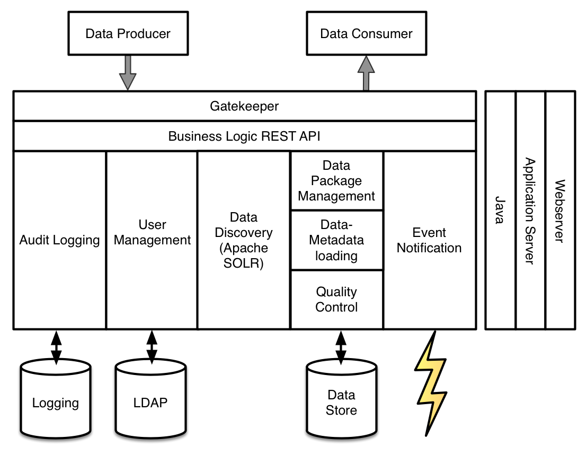
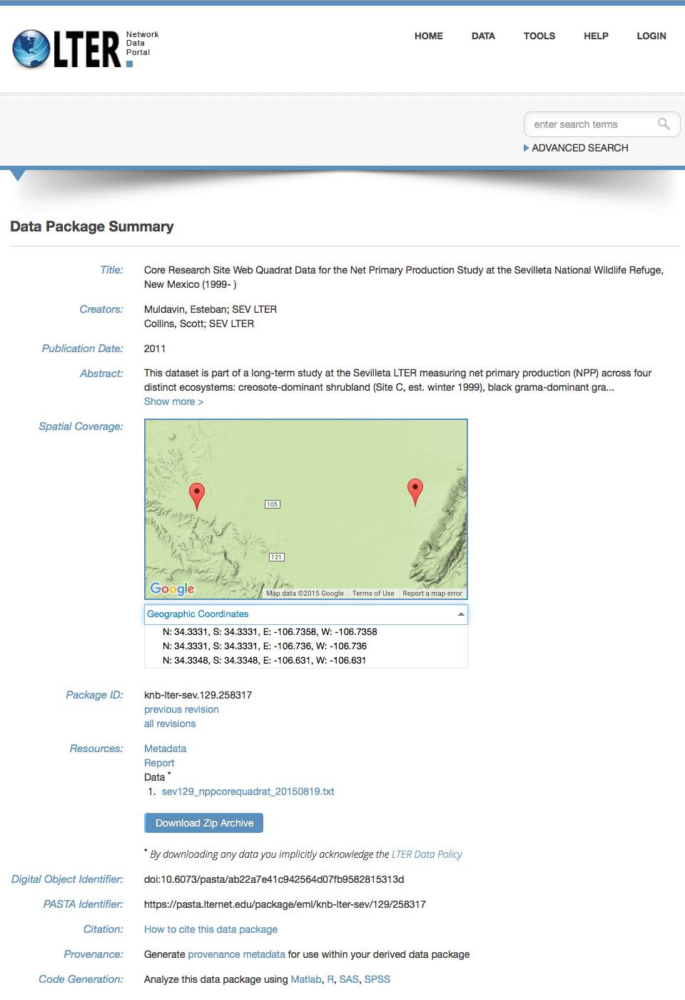
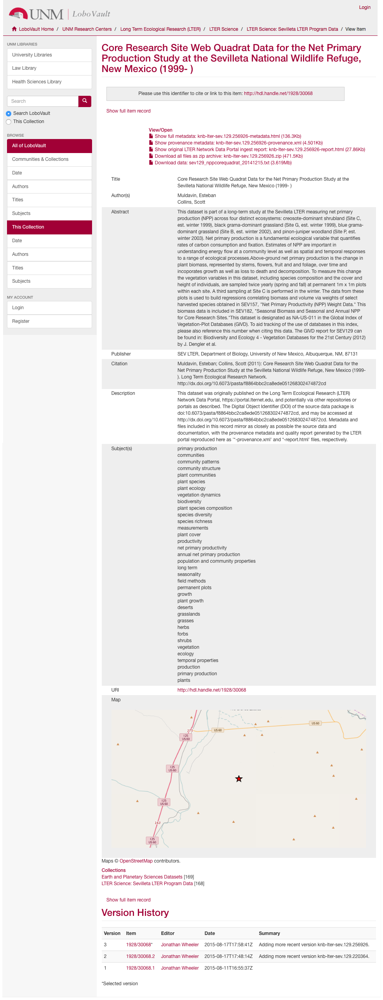

Linking data repositories - an illustration of agile data curation principles through robust documentation and multiple application programming interfaces
IN13A-1821
Karl Benedict1, Mark Stephen Servilla2, Kristin Vanderbilt3, Jonathan Wheeler4
Submitted Abstract
The growing volume, variety and velocity of production of Earth science data magnifies the impact of inefficiencies in data acquisition, processing, analysis, and sharing workflows, potentially to the point of impairing the ability of researchers to accomplish their desired scientific objectives. The adaptation of agile software development principles to data curation processes has significant potential to lower barriers to effective scientific data discovery and reuse - barriers that otherwise may force the development of new data to replace existing but unusable data, or require substantial effort to make data usable in new research contexts. This paper outlines a data curation process that was developed at the University of New Mexico that provides a cross-walk of data and associated documentation between the data archive developed by the Long Term Ecological Research (LTER) Network Office (PASTA) and UNM's institutional repository (LoboVault). The developed automated workflow enables the replication of versioned data objects and their associated standards-based metadata between the LTER system and LoboVault - providing long-term preservation for those data/metadata packages within LoboVault while maintaining the value-added services that the PASTA platform provides. The relative ease with which this workflow was developed is a product of the capabilities independently developed on both platforms - including the simplicity of providing a well-documented application programming interface (API) for each platform enabling scripted interaction and the use of well-established documentation standards (EML in the case of PASTA, Dublin Core in the case of LoboVault) by both systems. These system characteristics, when combined with an iterative process of interaction between the Data Curation Librarian (on the LoboVault side of the process), the Sevilleta LTER Information Manager and the LTER Network Information System developer, yielded a rapid and relatively streamlined process for targeted replication of data and metadata between the two systems - increasing the discoverability and usability of the LTER data assets.
Problem
The replication of data and associated documentation between systems for data security, enhanced discovery and access, or use on the secondary system is increasingly difficult as the number and variety of data objects increases. The development of data management and archiving systems and workflows that lower the barriers to automated movement of data and documentation between systems can enable efficient and scalable replication/migration of data assets between systems and between systems and users. Conceptually, this model of streaminled data management and curation based on sound system design principles may be described as agile data curation.
When confronted with the planned discontinuation of funding for the Sevilleta LTER research site, the LTER Network Infomation Information System designer (Servilla) and the Sevilleta Information Manager (Vanderbilt) approached the research data services team in the UNM Libraries (Benedict & Wheeler) to discuss the options for replication of the Sevilleta data and metadata assets currently managed within the LTER data management system (known as PASTA) into UNM’s institutional repository - LoboVault. The workflow that was developed to complete this replication is an excellent example of how efficient data transfer, management and reuse can be facilitated through the development of independent systems that are based upon design principles that enable well-structured machine-to-machine communication (via well documented Application Programming Interfaces - APIs), support of standards based documentation models, and effective communication between project participants throughout the development, testing, and implementation process. While not specifically intended to do so, the process used (and described in this poster) illustrates a number of core principles of agile data curation.
Mapping of Agile Software Development Principles into Data Curation
Our highest priority is to satisfy the customer through early and continuous delivery of valuable software.
Welcome changing requirements, even late in development. Agile processes harness change for the customer's competitive advantage.
Deliver working software frequently, from a couple of weeks to a couple of months, with a preference to the shorter timescale.
Business people and developers must work together daily throughout the project.
Build projects around motivated individuals. Give them the environment and support they need, and trust them to get the job done.
The most efficient and effective method of conveying information to and within a development team is face-to-face conversation.
Working software is the primary measure of progress.
Agile processes promote sustainable development. The sponsors, developers, and users should be able to maintain a constant pace indefinitely.
Continuous attention to technical excellence and good design enhances agility.
Simplicity--the art of maximizing the amount of work not done--is essential.
The best architectures, requirements, and designs emerge from self-organizing teams. At regular intervals, the team reflects on how to become more effective, then tunes and adjusts its behavior accordingly.
Agile Data Curation Principles
Maximize the impact of research data through accelerated capacity for discovery, access and use of valuable data
Expect unanticipated needs for and uses of research data (and documentation) and develop flexible systems to support new uses and users without significant modifications
Facilitate automated interaction with data and metadata assets through well documented public web services that enable disintermediated use and reuse of research data
Data creators and data curators should work closely throughout planning, research and preservation activities to ensure the most efficient and streamlined process
Identify key individuals in a data curation project that have the requisite knowledge and motivation to do the job and get out of their way
Identify the most effective method(s) for maintaining close communication and use them
Delivery, access, use and citation of research data are the primary measures of success
Design principles that enable steady delivery of incremental improvements to research data discovery, access and use should be consistent with a sustainable level of effort and funding from sponsors, data creators and curators, and users
Continuous attention to technical excellence and good design enhances agility
Start with the basics and only make systems more complex as needed, while maintaining a low bar to entry
Continuously work to develop and evolve a community of data providers, curators and users that all participate in the ongoing evolution of the research data systems that they interact with
Design Goals and Attributes of the Provenance Aware Synthesis Tracking Architecture (PASTA)
The PASTA platform was designed as part of the LTER Network Information System6 to support the data discovery, access and use needs of the community of Long Term Ecological Research sites and the users of the data that they produce. It has been developed with a well documented Application Programming Interface (API7 ) that enables create, evaluate, read, update, delete, list, and search for data package resources in the PASTA system. In particular it has the following characteristics:
Use of the Ecological Metadata Language8 as its metadata standard
Employs the Metacat XML database to support metadata search
Uses data warehousing methods to provide a uniform representation of the heterogeneous data managed within the system
Provides a web interface9 for browsing, searching, and viewing the contents of the PASTA system
Figure 1. PASTA Conceptual Diagram
Design Goals and Attributes of the DSpace Digital Repository Platform (LoboVault)
The University of New Mexico Libraries' DSpace10 based institutional repository, LoboVault, is an open access portal to the scholarly publications and research data of UNM faculty, graduate student theses and dissertations, and university administrative records. As a general purpose repository, LoboVault has been developed to provide an easy to use access and discovery resource for the full array of scholarly content and data types produced at UNM. The recent implementation of collection-scale batch ingest procedures is further designed to facilitate efficient publication of research output subject to federal publication and data sharing requirements. Relevant features include:
An extensible metadata model based on qualified Dublin Core11
Metadata federation and integration with external systems via OAI-PMH12
Batch ingest, editing, and cross-registration of content and metadata
As of DSpace v5, a RESTful API supporting search, create, read, update, and delete functions.
The development of a sandbox version of the repository for development and testing of workflows before execution of bulk ingest processes
The integration of the PASTA data packages for the Sevilleta LTER site leveraged the API's of both PASTA and DSpace to automate the process in a way that would meet the immediate needs for the Sevelleta collection while being extensible to all of the collections within PASTA. The specific capabilities of the developed workflow include:
Leveraging the extensibility of the DSpace metadata model to integrate location data within the PASTA EML metadata into the structured metadata within LoboVault using the Darwin Core extension to the Dublin Core standard
Maintaining dataset version information provided by PASTA within the LoboVault records
Conversion of the EML metadata content into corresponding DSpace Dublin Core or Darwin Core elements for search and presentation
Providing access to the source EML metadata and data objects housed within LoboVault
Providing an interactive data location map based on information extracted from the source EML metadata
Figure 3. Sample data package view from the LTER Network Data Portal14
Figure 4. Sample data package view from the LoboVault LTER collection15
Lessons Learned
This data and metadata integration project provides both an illustration of many of the agile data curation principles outlined below, but it also highlighted a number of ongoing challenges in addition to the benefits:
Benefits:
The availability of robust APIs in both PASTA and LoboVault enabled a high degree of automation that provides the promise of significantly streamlined ingest of additional PASTA collections if/when needed
The detailed and consistent EML metadata standard used in PASTA provided a rich resource of machine-readable documentation that could easily be mapped into LoboVault's metadata model
The project provided a concrete project around which the LTER and Library data management teams could collaborate - reinforcing the development of a growing research data management community of practice at UNM
Core PASTA data products are now safely replicated in a complementary system for long-term preservation and access
Challenges:
The different versioning models implemented within PASTA and LoboVault introduce a step in the processing of materials that hasn't been fully automated yet. This poses a challenge in maintaining synchronization between the systems.
The communication model based primarily on email exchanges introduced some delays in developing shared understanding that could have been achieved more quickly through in-person interactions.
Both PASTA and LoboVault support permanent identifiers but the identifiers used in the systems differ in that PASTA uses DOIs and LoboVault (currently) uses Handles. The specification of identifying the canonical identifier remains to be done.
The research reported here has been supported through funding from the National Science Foundation Cooperative Agreement DEB#0832652 (5/1/09 - 4/30/15), DEB#1440478 (4/1/2015 – 3/31/2017: Sevilleta LTER grant) and the College of Univerity Libraries and Learning Sciences at the University of New Mexico
 Agile Manifesto Principles: http://agilemanifesto.org/principles.html
Agile Manifesto Principles: http://agilemanifesto.org/principles.html